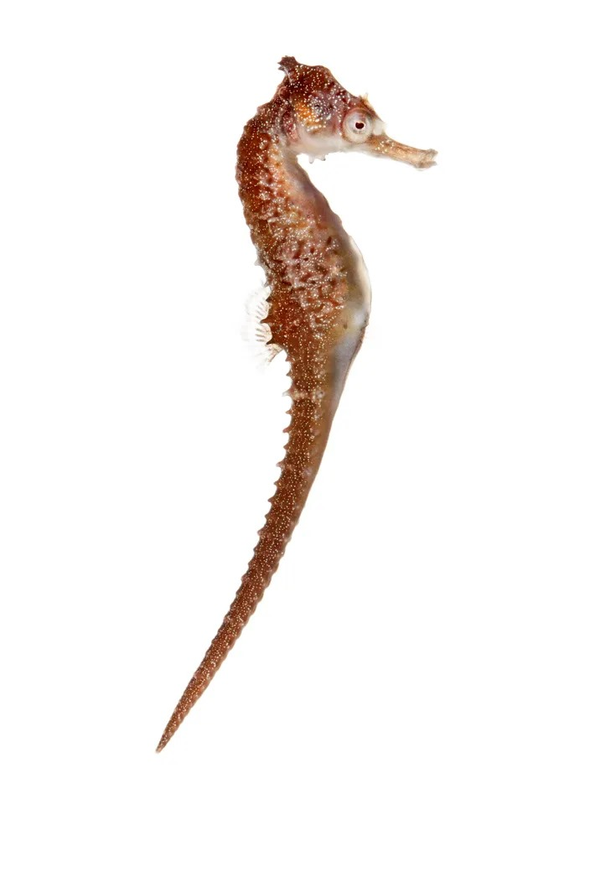
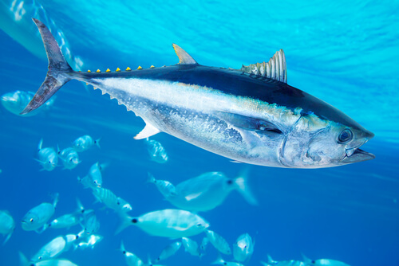

ESPECIES EN PELIGRO DE EXTINCIÓN
1-Caballito de mar blanco.
Se encuentra en peligro de extinción a causa de la invasión de la actividad humana en sus hogares naturales, el turismo y el agua doméstica contaminada y los desechos agrícolas o forestales que se arrojan al mar. Con una esperanza de vida de 2 años por generación de especie, el caballito de mar blanco reside en las costas de Nueva Gales del Sur, Australia; y es una especie protegida por ley en el país insular.

2-Ballena azul.
Es un mamífero del orden Cetartiodactyla que puede alcanzar los 30 metros de largo y pesar un total de 150 toneladas (150 000 kilogramos). A pesar de su majestuoso tamaño y de comprender un área de hábitat que abarca todos los océanos del mundo, se encuentra en peligro de extinción según la IUCN (Unión Internacional para la conservación de la Naturaleza).

3-Atún rojo del sur.
Según IUCN es el ser vivo de la lista cuya principal causa de peligro y que podría provocar su extinción es la sobreexplotación de su pesca. Son peces que habitan a profundidades cercanas a 1000 metros en el mar y pueden encontrarse en los océanos cercanos a las costas de Argentina, Uruguay, Brasil, Madagascar, Indonesia, Sudáfrica e incluso Australia.

4-Tortuga Golfina (Tortuga Blanca).
Esta es la más pequeña de las tortugas marinas; alcanza una longitud de 710 mm y un peso que no excede los 45 Kg. Posee de 6 a 8 pleurales a cada lado. El caparazón aplanado tiene forma de corazón, visto dorsalmente, es alto hacia el puente y aserrado en su extremo posterior. Se encuentra especialmente en zonas de aguas marinas poco profundas y protegidas, aunque a veces son vistas en el mar abierto, generalmente se distribuyen en las aguas tropicales de los océanos Pacífico e Índico.

5-Tortuga Prieta (Tortuga Negra).
Conocida oficialmente como tortuga verde del Pacífico Oriental, la tortuga negra es más pequeña y de color más oscuro que la tortuga verde. Las tortugas negras tienen un caparazón en forma de una gota, lo que hace que su forma sea diferente a la de la tortuga verde, que tiene forma ovalada, además la cabeza de las tortugas negras es incluso más pequeña que la de las tortugas verdes.

6-Tortuga Carey.
Es una tortuga marina pequeña, cabeza alargada y boca de pico, se distribuye por las aguas tropicales del, por lo que se puede encontrar en las zonas poco profundas a lo largo del Mar Caribe y el Océano Atlántico occidental, del sur de Florida al Golfo de México, en las Antillas Mayores y Menores, y a lo largo del continente americano central hasta el sur de Brasil.
Ha sido una especie muy cazada por el ser humano a lo largo de la historia ya que su carne se considera un manjar y su caparazón se ha usado, como el marfil, para fabricar elementos decorativos.

7-Tortuga Baule.
Es la única tortuga marina sin caparazón duro, posee una a piel sin placas y suave, semejante al cuero que la cubre. La tortuga baula es la más grande de todas las especies de tortuga marina (una hembra puede pesar aproximadamente 500 Kg.). Por lo general mide entre 130-175 cm. La cabeza es grande y puede representar hasta un 20 % de la longitud del caparazón. Según IUCN la clasifica como una especie en Peligro Crítico de Extinción, lo que significa que se ha dado una disminución del 80% de su población global en los últimos 10 años, debido a la pesca incidental, la explotación insostenible de huevos y captura dirigida de tortugas, así como la destrucción o alteración de su hábitat de anidación.

8-La vaquita marina.
Es la única tortuga marina sin caparazón duro, posee una a piel sin placas y suave, semejante al cuero que la cubre. La tortuga baula es la más grande de todas las especies de tortuga marina (una hembra puede pesar aproximadamente 500 Kg.). Por lo general mide entre 130-175 cm. La cabeza es grande y puede representar hasta un 20 % de la longitud del caparazón. Según IUCN la clasifica como una especie en Peligro Crítico de Extinción, lo que significa que se ha dado una disminución del 80% de su población global en los últimos 10 años, debido a la pesca incidental, la explotación insostenible de huevos y captura dirigida de tortugas, así como la destrucción o alteración de su hábitat de anidación.

9-Anguila europea.
Es una especie que pasa parte de su ciclo vital en agua dulce y otra mar adentro. Actualmente, la población de anguila europea apenas representa el 1% o el 2% de la existente en la década de los 80. Hay muchas razones de su declive, pero, entre ellas destaca la alta regulación de los ríos que impide que lleguen a sus zonas de crecimiento, así como la pérdida y contaminación de sus ecosistemas naturales.

10-Pez guitarra.
Es un animal cartilaginoso con cabeza grande y triangular, como las rayas, y un cuerpo parecido al del tiburón. Desde el año 2011 figura en la Lista Roja de la UICN de especies consideradas En Peligro de Extinción y está prohibida tanto su venta como su desembarco, almacenaje, exhibición o conservación a bordo en toda la Unión Europea. La especie está actualmente monitorizada y sus investigaciones se centran en el control de la población en retroceso.